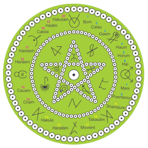

Magia da Natureza
O que é Magia.
A magia é desenvolver todo o próprio potencial, acessando tudo o que
está no momento certo para ser acessado, compreendido e explorado
incansavelmente, mas com equilíbrio, serenidade e sensatez.
Esta força interior, adormecida em alguns, sendo usada imaturamente
por outros e já despertando em uma grande quantidade, mas causando
medo e confusão pela falta de preparo para entender como usá-la,
quando despertada pela Magia da Natureza, entra em conexão direta
com toda a natureza e com toda a sabedoria nela contida.
Este contato é feito aos poucos, de acordo com o despertar de cada um,
mas que com a prática constante da magia é acelerado e traz o
conhecimento do universo que está guardado dentro de todos.
Na Magia da Natureza nos conectamos com as sete energias da natureza, a energia das Florestas, Rios, Mares, Desertos, Cachoeiras, Lagos e Montanhas para podermos acessar todo o nosso potencial adormecido e desenvolver intensamente os sentidos da intuição, percepção e telepatia.
Temos acesso as nossas raizes mais profundas, a comunicação astral torna-se sutil, intensa e harmonica, tudo naturalmente como a natureza, é então que a magia acontece.
Os Caminhos da Magia da Natureza
Ao começarmos a praticar a Magia da Natureza, cada energia representa uma etapa no Caminho de Luz que desponta em nosso horizonte para a Busca de quem somos, o Esclarecimento de nossas dúvidas, o Entendimento de tudo e de todos a nossa volta, a Aquisição do que queremos para nós, a Aceitação do que o nosso próximo quer para si, a Doação de nosso melhor para todos e o nosso Reconhecimento de que todos somos iguais e caminhamos por diferentes caminhos para um objetivo comum: O encontro com nós mesmos.
